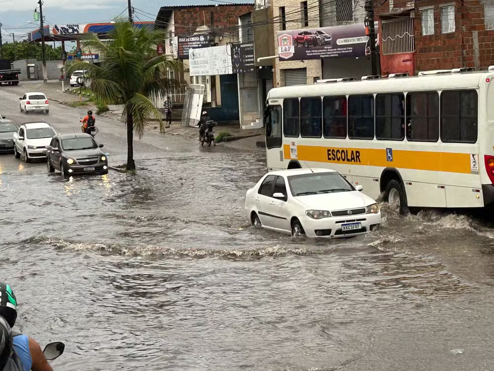

.png)
 (Personalizado).png)
As fortes chuvas que caíram em Natal na manhã desta sexta-feira (8) causaram alagamentos e transtornos em vias da capital e também em prédios públicos da capital.
Na Vila de Ponta Negra, uma cratera aberta desde a última segunda-feira (4) aumentou e interrompeu a passagem de veículos e pedestres, segundo moradores na rua Rua Estevam Pascoal.
"Antes o pessoal ainda estava passando pela calçada. Agora não dá mais. A rua é fechada e quem está no fim dela não consegue sair de casa", afirmou a moradora Marcela Silva, de 21 anos.
Segundo o setor de meteorologia da Empresa de Pesquisa Agropecuária do Rio Grande do Norte (Emparn), a capital registrou acumulado de 78.2 milímetros em 24 horas, até às 7h desta sexta (8).
Na região metropolitana da capital, Nísia Floresta e São Gonçalo do Amarante, tiveram chuvas com acumulados superiores a 100 milímetros por dia - 176 mm e 109 mm, respectivamente - no mesmo período.
Várias ruas da cidade tiveram alagamentos. No bairro Cidade Nova, a Avenida Solange Nunes ficou alagada durante a manhã, e veículos tiveram dificuldade de passar pelo local.
Também houve alagamento na Rua Silvio Caldas, no bairro Cidade da Esperança, na Zona Oeste da cidade. Um morador registrou um carro que ficou ilhado na via.

Na Central de Abastecimento (Ceasa), localizada também na Zona Oeste da cidade, comerciantes registraram os impactos da chuva ainda na madrugada, com água escorrendo pela cobertura e acumulada no piso do local de trabalho.
Em nota, a Ceasa informou que está ciente da situação e da responsabilidade quanto a resolução do problema. "A licitação para contratar a empresa para executar a obra já foi feita. Estamos agora nos trâmites burocráticos de entrega da documentação e licenças. Logo mais a obra vai iniciar", informou.
Na Unidade Básica de Saúde do Alto da Torre, na Redinha, Zona Norte da capital, moradoras da comunidade se uniram para tirar a água que se infiltrou na estrutura do prédio.

A gestão da unidade informou há pelo menos um ano já havia solicitado providências para o problema. Parte da programação organizada para o dia internacional das Mulheres foi adiada.
Sobre a cratera na Vila de Ponta Negra, a Prefeitura de Natal informou que a Secretaria de Infraestrutura enviou uma equipe ao local para iniciar os procedimentos de reparo.

"Os serviços desse reparo deverão começar, inclusive, ainda hoje, a depender também do comportamento das chuvas. Começando hoje, a previsão é de estar concluído amanhã, sempre condicionado às chuvas e, também, a uma atuação conjunta com a Caern, referente à rede de drenagem local, também atingidada cratera na Vila de Ponta Negra", informou em nota.
A prefeitura também foi questionada sobre a situação da UBS, mas não respondeu sobre o assunto até a última atualização desta matéria.
Pneus queimados
Em Parnamirim, na região metropolitana, moradores da rua Antônio de Lima Paiva, no bairro Nova Esperança, queimaram pneus durante a manhã, em protesto que cobrava serviços de drenagem na via.